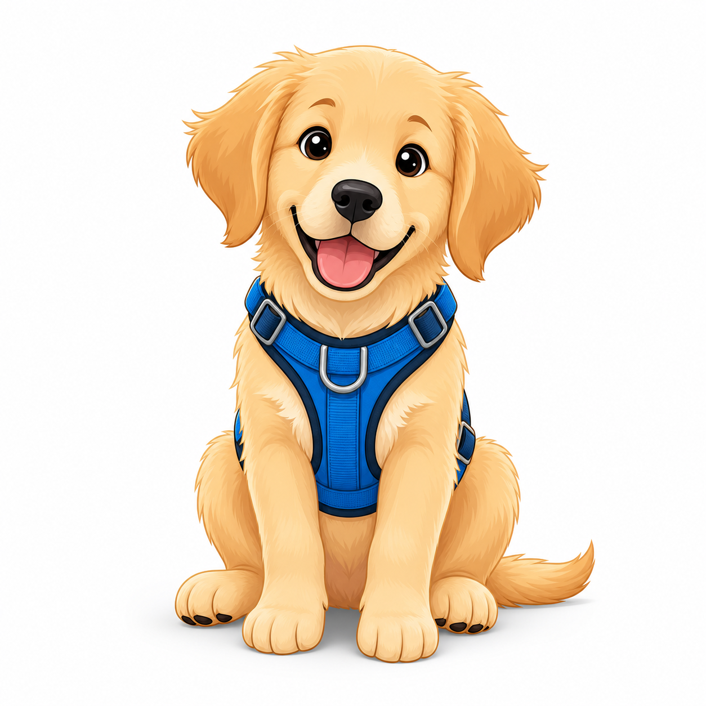
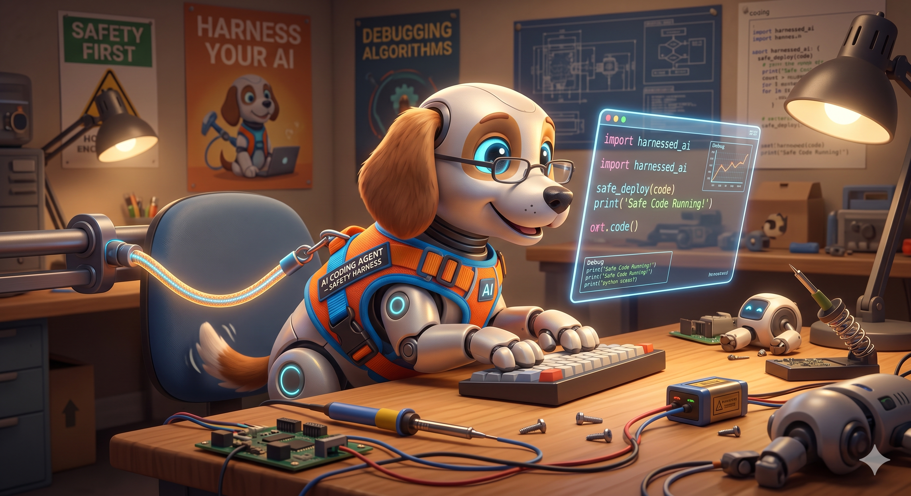
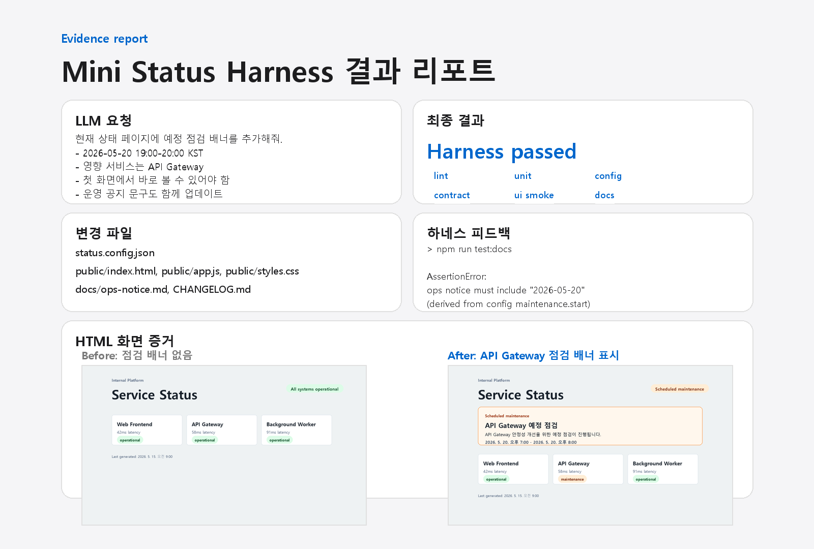

Harness Engineering
AI가 만든 결과를 조직이 믿을 수 있는 결과로 바꾸는 일
AI 결과→자동 검증→믿고 쓸 수 있는 결과
발표자 · SE 그룹 이건욱
Harness


강아지의 하네스처럼, AI도 제멋대로 움직이지 않게 도와주는 장치가 필요합니다.
퀴즈
AI 활용 업무 처리 시 병목은 어디일까요?
AI가 빠르게 처리하는 일
AI가 빠르게 처리하는 일
코드 수정
테스트 실행
문서 초안
설정 변경
→
?
→
빌드 결과 확인
운영 공지
PR 준비
배포 전 점검
정답
AI가 빠르게 처리하는 일
AI가 빠르게 처리하는 일
코드 수정
테스트 실행
문서 초안
설정 변경
→
사람
→
빌드 결과 확인
운영 공지
PR 준비
배포 전 점검
반복 검증이 사람에게 몰리면 AI를 써도 흐름은 빨라지지 않습니다.
수동 확인을 자동 검증으로
Before
AI 변경 → 사람이 매번 확인 → 머지/배포
사람 병목After
AI 변경 → 자동 검증 → 사람은 예외 판단
흐름 유지| 사람이 매번 확인 | 자동 검증으로 대체 |
|---|---|
| 테스트 돌렸나? | CI 자동 실행 |
| 설정 형식 맞나? | 설정 형식 자동 검사 |
| API 계약 깨졌나? | API 계약 자동 검사 |
| 운영 공지 갱신했나? | 문서/공지 자동 검사 |
| 화면에 보이나? | 화면 표시 자동 검사 |
Harness Engineering은 AI 결과가 팀의 빌드·테스트·리뷰·운영 기준을 지나가게 하는 자동화된 검증 흐름입니다.
영역별 적용 예시
문서
Markdown lint
Link check
Frontmatter schema
FE
UI smoke
접근성
화면 regression test
BE
API contract
migration
compatibility
System Engineer
빌드 정책
권한/감사
AI용 CI 피드백
각자 자기 업무에서 사람이 반복 확인하는 항목 하나를 자동화 후보로 잡는 것이 시작점입니다.
공개 자료에서 보이는 공통 패턴
에이전트에게 지시만 주는 것이 아니라, 저장소 규칙·훅·CI·리뷰 루프를 함께 제공합니다.
OpenAI
testing, validation, review, feedback handling, recovery를 시스템에 인코딩
Claude Code
CLAUDE.md, hooks, skills로 저장소별 규칙과 반복 작업 제공
GitHub Copilot
GitHub Actions와 PR 흐름 안에서 agent 작업 수행
DORA / DevOps
자동 테스트, 배포 자동화, 빠른 피드백, 수동 단계 감소
예제를 통한 실습
Internal Platform
Service Status
All systems normal
Web Frontend42ms latencyoperational
API Gateway58ms latencyoperational
Background Worker91ms latencyoperational
Auth Service33ms latencyoperational
현재 — 점검 안내 없음
Internal Platform
Service Status
Scheduled maintenance
Scheduled maintenance
API Gateway · 2026-05-20 19:00-20:00 KST
Web Frontend42ms latencyoperational
API Gateway58ms latencymaintenance
Background Worker91ms latencyoperational
Auth Service33ms latencyoperational
목표 — 첫 화면에 점검 배너
요청
AI 요청 문구
현재 상태 페이지에 예정 점검 배너를 추가해줘. 운영 공지, ops audit log, HTML 결과 리포트까지 업데이트하고 완료 전 npm run maintenance:complete를 실행해줘.
영향 범위
설정maintenance.enabled, 일정, 영향 서비스
화면배너 DOM, 렌더러, 토큰 기반 스타일
운영운영 공지, changelog, 감사 로그
증거하네스 로그, 화면 snapshot, HTML 리포트
한 요청, 네 곳의 변경 — 하네스가 정합성(Consistency)을 검증합니다.
영역별 검증
| 영역 | 체크 | 보장하는 것 |
|---|---|---|
| 설정 | unit, config, api contract | 도메인 로직·스키마·응답 계약 |
| 화면 | ui smoke, design contract | 배너 DOM·렌더러·디자인 토큰·금지 스타일 |
| 운영 | docs, ops log | 공지·changelog·감사 로그 ↔ config |
| 증거 | report | 리포트 본문·첨부·로그 정합 |
최종 검증
> npm run maintenance:complete lint passed unit tests passed config check passed api contract check passed ui smoke check passed docs check passed design contract check passed ops log check passed report check passed
결과 리포트

하네스 스크립트 상세 내용
방금 본
passed 9줄이 사실은 9개의 작은 스크립트입니다.// scripts/check-docs.mjs (발췌)
const config = JSON.parse(await readFile("../status.config.json"));
if (!config.maintenance?.enabled) { process.exit(0); }
const notice = await readFile("../docs/ops-notice.md", "utf8");
const changelog = await readFile("../CHANGELOG.md", "utf8");
const expectedDate = config.maintenance.start.slice(0, 10);
const expectedService = config.maintenance.serviceName;
assert.ok(notice.includes(expectedDate), "ops notice에 점검 일자 누락");
assert.ok(notice.includes(expectedService), "ops notice에 서비스명 누락");
assert.ok(changelog.includes(expectedDate), "CHANGELOG에 점검 일자 누락");
assert.ok(changelog.includes(expectedService), "CHANGELOG에 서비스명 누락");이 한 파일이 보장하는 것: config의 점검 정보와 ops-notice.md·CHANGELOG.md가 같은 이야기를 한다.
AI가 화면만 바꾸고 운영 공지를 빼먹으면
AI가 화면만 바꾸고 운영 공지를 빼먹으면
docs check가 fail하고, AI는 통과시키기 위해 스스로 코드를 다시 고칩니다.모델이 좋아지면 하네스는?
단순해지는 게 아니라, 모델에 맞게 재설계됩니다.
목표
무엇을 만들 것인가
제약 조건
지켜야 할 한계·규칙
완료 기준
끝났다고 말할 신호
검증 체계
자동으로 정합성을 본다
모델만 교체가 아니라, 활용 방식 자체를 함께 조정합니다.
Harness가 천장을 받친다
"Vibe Coding이 바닥을 올린다면, Agentic Engineering은 천장을 높인다."— Andrej Karpathy
천장은 저절로 올라가지 않습니다. AI가 더 많이 만들수록 검증·운영 부담도 같이 늘어나기 때문입니다. Harness Engineering은 그 부담을 사람이 아닌 AI가 수행하게 만들어, Agentic Engineering의 천장을 더 높일 수 있습니다.
AI가 더 많이 구현할수록
사람은 문제 정의자, 기준 설계자, 예외 판단자에 가까워집니다.
사람이 해야 할 일
무엇을 만들지, 어떤 기준을 지킬지, 어떤 예외를 허용할지 결정합니다.
이번 주에는 같은 질문을 3번 이상 반복한 항목 하나를 자동화 후보로 적어보세요.
※ Agentic Engineering: AI 에이전트가 개발·운영 업무를 스스로 수행하도록 시스템과 검증 흐름을 설계하는 분야.
Sources
- OpenAI, Harness Engineering: https://openai.com/index/harness-engineering/
- Anthropic, Claude Code best practices: https://code.claude.com/docs/en/best-practices
- GitHub Docs, Copilot coding agent concepts: https://docs.github.com/en/copilot/concepts/about-copilot-coding-agent
- DORA capabilities: https://dora.dev/capabilities/
- Andrej Karpathy, Sequoia Ascent 2026 — From Vibe Coding to Agentic Engineering